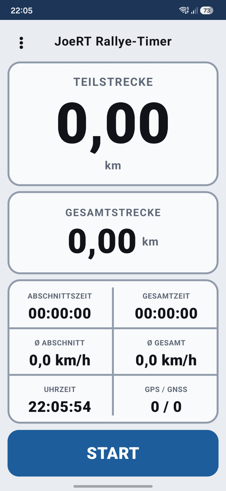
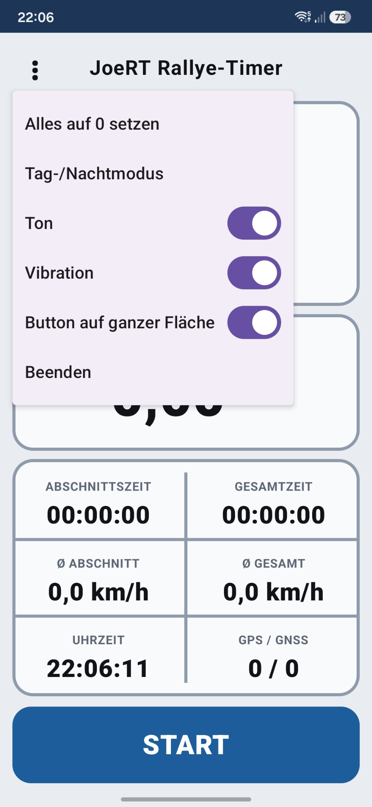

GPS-Rallye-Timer für Oldtimer-Rallyes.
JoeRT Rallye-Timer misst Teilstrecke, Gesamtstrecke, Zeiten und Durchschnittsgeschwindigkeit – übersichtlich, groß dargestellt und für den Einsatz bei Oldtimer- und Gleichmäßigkeitsrallyes konzipiert.
Keine Registrierung. Keine Werbung. Keine Cloud-Anbindung erforderlich.

Alles Wichtige auf einen Blick
Die Oberfläche ist bewusst groß, kontrastreich und schnell erfassbar gehalten – damit während einer Rallye keine unnötige Bedienung erforderlich ist.
Teil- & Gesamtstrecke
GPS-gestützte Wegmessung mit separater Abschnittsanzeige und fortlaufender Gesamtstrecke.
Abschnitts- & Gesamtzeit
Klare Zeitmessung für den aktuellen Abschnitt sowie für die gesamte Fahrt.
Durchschnittsgeschwindigkeit
Ø-Geschwindigkeit für Abschnitt und Gesamtfahrt direkt in der Hauptansicht.
GPS / GNSS Status
Anzeige der aktuell verwendeten und sichtbaren Satelliten für eine schnelle Plausibilitätskontrolle.
Tag- & Nachtmodus
Heller Modus für den Tag und dunkle Darstellung für Nachtfahrten und Innenräume.
Ton & Vibration
Bestätigung bei Abschnittswechseln; beides lässt sich im Menü separat ein- und ausschalten.
Übersichtliche Bedienung
Große Zahlen, klare Trennlinien und ein reduziertes Bedienkonzept für den Einsatz unterwegs.


Installation
APK auf das Android-Smartphone herunterladen, öffnen und die Installation aus unbekannter Quelle für den verwendeten Browser bzw. Dateimanager erlauben.
Datenschutz
JoeRT Rallye-Timer verwendet den Standort des Smartphones ausschließlich zur GPS-gestützten Streckenmessung.
Die Messdaten werden lokal auf dem Gerät verarbeitet. Es werden keine Standort-, Nutzungs- oder sonstigen personenbezogenen Daten an den Entwickler oder an Dritte übertragen. Die App enthält keine Werbung, keine Analyse- oder Trackingdienste und benötigt keine Internetverbindung.
Für die Streckenmessung benötigt die App Zugriff auf den Gerätestandort. Die Benachrichtigungsberechtigung wird benötigt, damit Android die laufende GPS-Messung auch im Hintergrund zuverlässig fortführen kann.